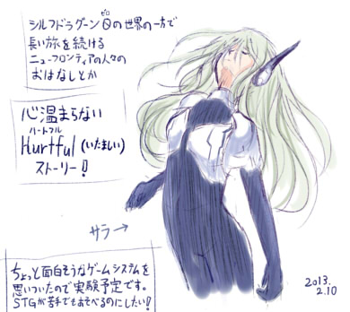

■
2013-02-16 (土) 狩人C＆片道Ver1.60▼
時々バグ修正にいそしんでいます。
【狩人C】
「記事タイトルに狩人Cと書かねばならないほど
狩人Cがお気に入りなんですかァー！？」
と聞かれればそれなりに好きですと答えられましょう！
でも個人的には理術士Bのほうがお気に入りです。
【狩人C バックグラウンドストーリー】
もともと弱気なのをいいことに、この少女は周囲の人間から
常にいいように扱われ続け、次第に彼女は人間不信となってしまった。
ひどい家族や村の人々から逃げ出すことを決めた彼女は、
最終的に森の中で動物とだけふれ合って生きることを選び、
狩人の道を目指すようになる。
しかしある日、彼女はネムリと同じく、
闇の霧の影響を受けて半獣と化してしまう。
見れば、闇はもうすぐそこまで迫ってきていた。
すでに帰る家を失っていた少女は、闇から逃れ続けた。
新たに得た、半獣の力を使って。
ある日、立ち寄った城で「魔王を倒せば闇は止まる」という話を立ち聞きして、
大きな勇気を振り絞ってそこの兵士に詳しい話を聞きに行ったところ……。
なんと彼女はそのまま志願者扱いされて、王様の前まで連れていかれてしまう。
重々しい雰囲気の中、少女は断り切ることができず、
結局モヤモヤするまま冒険は始まってしまったのであった……。
やっぱり他人にいいように扱われてる気がした少女だったが、
それでも逃げずに戦うことで得られる「何か」もあるのかもしれないと
自分を納得させ、少女は旅に出た。何より、ただの村娘だった少女は
半獣と化したことで、今や魔物と戦うのに充分すぎる力を持っていたのだ。
耳としっぽが生えて以後、恐くなるとしっぽを足の間に
はさむくせがついたが、本人はあまり気付いていない。
【片道勇者 Ver1.60更新内容】
なんだかんだで今もバグ修正中です。
・倒した敵の状態異常が次の敵にうつるバグを修正。
ステータス異常周りでかなり大規模な修正を行ったので
また何か問題が起きているかもしれません。
・1.58以前で始めた古いセーブデータをロードすると、
隠しボスにそのまま攻撃が通ってしまうバグ修正。
・セーブクリスタルでセーブしたデータをロードしても敵のターンから
始まらないようになってたので説明文を修正しました。
・アイテム増殖ができてしまっていたのを修正
なお
「手配状態で住人に気付かれる前に話すと普通に対応してくれる現象」
は、面白そうなので仕様とすることにします。
気付いてない相手から突然話しかけられても一瞬で
手配犯だと見抜けないと思いますので、裏技としていいかなって。
接近するために覚醒を数回使うデメリットに見合うとも思えませんしね。
（「目が悪い」相手なら、ジャンプで近付けばごまかせるかも）
以下は拍手コメント返信です。いつもコメントありがとうございます！
＞携帯と言えばずっと待っているauユーザですが
＞クリフェ……(´;ω;`)ﾌﾞｧ .
ﾌﾞｧ。儲かるものだったら色々展開されるんでしょうけれどね……
いやあ、なかなか難しいもんですよ……。
＞シルフェイド幻想譚と片道勇者をやって気づいたのですが、
＞これらのゲームって武器の種類が少ない気がするのですが、
＞何か理由があるのですか？ .
片道勇者みたいなローグライクもどきなゲームなら、
武器の「弱・中・強・最強」と「属性/タイプ違い」くらいの種類で
特に問題無いと考えています（不思議のダンジョンシリーズの
初期作「トルネコの大冒険」にいたっては7種類だけですし）。
幻想譚も、そもそもそんなに長くないゲームですから、
装備は最大5段階くらいのアップグレードでいいと考えています。
遊んでて楽しいのはキャラを強くできる武器を見つけたときで、
むやみに種類が増えることじゃないですからね。
（コレクション魂あふれる人にはごめんなさいな発言ですが）
これが、「武器を使用するための能力制限が厳しく」て、
「自分に一番あった武器を探すのを面白くする」ゲームにするなら、
色々種類があると面白いかもしれません。
「トライデントは人気なさそうだけど自分にとっては最強なんだ！」とか。
いつか装備チョイスに面白みを持たせるゲームも作ってみたいですね。■
2013-02-10 (日) 構想中+片道Ver1.57▼
「ウガアアアアアゲーム作りたいよー！」と叫んでいます。
レンチやスパナを作るよりもメカを作りたい！

次回作用の新作シェアウェア、ほんのり考え中です。
あんまり買う人もいないジャンルだろうなとは思いつつ、
プロトタイプ第一案はシューティング系で攻めてみようと考えています。
モノリスフィアやシルフドラグーンよりは、
もっと幅広い人に遊んでもらえる内容にしたいですね。
暗い内容のゲームを開発しながら、別作品用に明るいネタを考えたりして
精神のバランスをとるような感じにすると割とうまいこといくようなので、
雰囲気的には、シル見と真逆な方向性も割と有りかなーと思ってます。
■片道勇者 Ver1.57修正点
・Ver1.56にするとキャラが瞬歩で移動していた現象を修正。
・爆弾矢を弓で"対象に当てる"と耐久が2発分消耗する現象を修正
・召喚獣を何度も呼び直した場合、消滅までのタイマーが消えていないのを修正
・詩人の防御で「物理攻撃ダメージを」とあるが、理力ダメージも1/3になるバグ修正
・ネムリを攻撃しても手配度が上昇しないバグ修正。あやうく、
「半獣人には人権がないんですか！？何しても許されるんですか！？い、いやぁぁ！」
という展開になるところでした。危ない危ない。
以下は拍手返信です。
＞シル学で農学部なるユーザーデーターを作ろうと考えているものなのですが、
＞シルフェイド島の土壌は塩害により作物の生産が難しいと考えてもよろしいの
＞でしょうか？あと気候は年間を通して穏やかで温暖の差が少ないものだと考え
＞てよろしいのでしょうか？できる範囲でよければ島の環境設定について教えて
＞いただけ無いでしょうか？ .
元は海の底にあった島なので、全体的に塩害だと思います。
気候は年間を通して穏やかで寒暖の差が少なめで、
年間を通して冬服で間に合うくらいを想定しています（そのため夏服がない）。
すでに描いたグラフィックを見る限り、シルフェイド島は
なんとなく東北地方の太平洋沖あたりにある感じです。
ゲーム内で出ている情報は、ひとまずそんな感じでしょうね。
湿度や雨の量など、その他全ては決めたもん勝ちです。ご自由に！
観測されていない事象は世界を生み出した人によって変化するのが、
シルフェイド学院物語の正しい世界観です。
＞自分もガラケー使ってます。 ゲームを作りたい創りたいと
＞思っても、プログラムの組み立てとか複雑すぎて .
＞混乱してしまいます。どうしたらよいでしょう？ 企画書も。
ひとまずは、「今の自分の能力でなんとか作れそうなもの」を考えて、
ただひたすら作り続け、能力を上げていくしかないと思います。
それはきっと一般的に見れば簡単すぎるものだったり
ゲームですらなかったりするでしょうけれど、
あなたにとってはすごく苦労するはずです。
その繰り返しでようやく、複雑に感じていたものが複雑でなくなってきます。
すごいプログラムのゲームを作ってる人は、すでにそれを
三年や五年、下手すると十年くらいこなしてる人だったりしますから、
そこに到達するにはおおよそ同じだけの訓練時間が必要だと思います。
私は見せる相手が特にいないので企画書や詳細な仕様書は作ってませんが、
一人でやるなら、制作物自体を見やすくして仕様書代わりにできると幸せですよ！
「技術を身につけたら作りたい」ゲームのネタは、
今からしっかりメモして未来に備えてください。自分も今になって助かってます。
あ、考えてるゲームが非常に面白い内容だと説明できる能力があるなら、
作れる力を持った友達に頼むのもありですよ。
ひとまずウディタの方はおおよそ一段落しつつある感じなので、
徐々に英語翻訳してもらいつつ、私も新作構想に移りたいと思います。
その過程で、トレーニングがてら真シル見の素材も徐々に作っていければ理想！
いよいよ本領発揮、うおおおおお！ カテゴリ: 開発日誌
カテゴリ: 開発日誌 カテゴリ: 開発日誌
カテゴリ: 開発日誌